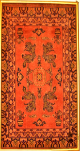

8. चीनी कालीन

अभिलेख संख्या: XXX-29
ड्रैगन डिज़ाइन वाला चीन का यह कालीन, जिसके केंद्रीय मेडलियन के दोनों किनारे मुड़े हुए हैं जबकि ऊपरी और निचले भाग सीधे हैं, बीच में एक अंडाकार पैनल बना हुआ है। यह चीनी कालीन 19वीं शताब्दी का है। चीन में शाही दरबार के लिए पहली बार लगभग 2,000 वर्ष पहले कालीन बनाए गए थे। चीनी कालीन बुनाई का इतिहास बहुत समृद्ध है, जिसकी शुरुआत संभवतः नवपाषाण काल से हुई थी, और निश्चित रूप से हान राजवंश (206 ईसा पूर्व से 220 ईस्वी) तक पहुंच चुकी थी। प्राचीन चीनी कालीनों की पहचान अक्सर चीनी मिट्टी की चित्रकारी या रेशमी बुनाई के नमूनों से की जाती है। इनमें ताओवादी और बौद्ध प्रभाव भी दिखाई देते हैं — उदाहरण के लिए, जब ड्रैगन भयावह रूप में कालीन से बाहर निकलते प्रतीत होते हैं। चीनी कालीन अपनी सरल आकृतियों, विशिष्ट इंडिगो नीले रंगों और प्रतीकात्मक चित्रों के कारण पहचाने जाते हैं, जो उन्हें फारसी कालीनों से अलग बनाते हैं।
۸. چینی قالین
Acc No: XXX-29
یہ چینی قالین ہے جس پر اژدہا کا ڈیزائن بنایا گیا ہے۔ جس کے مرکزی میڈلین کے دونوں کنارے مڑے ہوئے ہیں، جبکہ اوپر اور نیچے کی جانب سیدھی لکیر ہے۔ درمیان میں بیضوی پینل بھی موجود ہے۔ یہ چینی قالین انیسویں صدی کا ہے۔ چین میں سب سے پہلے شاہی دربار کے لیے قالین تقریباً 2,000 سال پہلے بنائے گئے تھے۔ چینی قالین صنعت کاری کی تاریخ انتہائی قدیم اور ثروت مند ہے، جس کی کچھ ابتدا ممکنہ طور پر نیولیتھک عہد تک جاتی ہے اور یقینی طور پر ہان خاندان تک پھیلی ہوئی تھی۔ قدیم قالینوں کی پہچان چینی برتن کی پینٹنگ یا ریشمی صنعت کے نمونوں سے کی جاتی ہے۔ ان میں تاؤ مت اور بدھ مت کے اثرات بھی دیکھے جا سکتے ہیں، مثلاً جب اژدہا قالین پر خوفناک دکھائی دیتے ہیں۔ چینی قالین اپنی سادہ اشکال، مخصوص نیلے رنگوں، اور علامتی نقوش کے باعث پہچانے جاتے ہیں، جو انہیں فارس کے قالینوں سے ممتاز بناتے ہیں۔
۸. چینی قالین
Acc No: XXX-29
یہ چینی قالین ہے جس پر اژدہا کا ڈیزائن بنایا گیا ہے۔ جس کے مرکزی میڈلین کے دونوں کنارے مڑے ہوئے ہیں، جبکہ اوپر اور نیچے کی جانب سیدھی لکیر ہے۔ درمیان میں بیضوی پینل بھی موجود ہے۔ یہ چینی قالین انیسویں صدی کا ہے۔ چین میں سب سے پہلے شاہی دربار کے لیے قالین تقریباً 2,000 سال پہلے بنائے گئے تھے۔ چینی قالین صنعت کاری کی تاریخ انتہائی قدیم اور ثروت مند ہے، جس کی کچھ ابتدا ممکنہ طور پر نیولیتھک عہد تک جاتی ہے اور یقینی طور پر ہان خاندان تک پھیلی ہوئی تھی۔ قدیم قالینوں کی پہچان چینی برتن کی پینٹنگ یا ریشمی صنعت کے نمونوں سے کی جاتی ہے۔ ان میں تاؤ مت اور بدھ مت کے اثرات بھی دیکھے جا سکتے ہیں، مثلاً جب اژدہا قالین پر خوفناک دکھائی دیتے ہیں۔ چینی قالین اپنی سادہ اشکال، مخصوص نیلے رنگوں، اور علامتی نقوش کے باعث پہچانے جاتے ہیں، جو انہیں فارس کے قالینوں سے ممتاز بناتے ہیں۔
۸. چینی قالین
Acc No: XXX-29
یہ چینی قالین ہے جس پر اژدہا کا ڈیزائن بنایا گیا ہے۔ جس کے مرکزی میڈلین کے دونوں کنارے مڑے ہوئے ہیں، جبکہ اوپر اور نیچے کی جانب سیدھی لکیر ہے۔ درمیان میں بیضوی پینل بھی موجود ہے۔ یہ چینی قالین انیسویں صدی کا ہے۔ چین میں سب سے پہلے شاہی دربار کے لیے قالین تقریباً 2,000 سال پہلے بنائے گئے تھے۔ چینی قالین صنعت کاری کی تاریخ انتہائی قدیم اور ثروت مند ہے، جس کی کچھ ابتدا ممکنہ طور پر نیولیتھک عہد تک جاتی ہے اور یقینی طور پر ہان خاندان تک پھیلی ہوئی تھی۔ قدیم قالینوں کی پہچان چینی برتن کی پینٹنگ یا ریشمی صنعت کے نمونوں سے کی جاتی ہے۔ ان میں تاؤ مت اور بدھ مت کے اثرات بھی دیکھے جا سکتے ہیں، مثلاً جب اژدہا قالین پر خوفناک دکھائی دیتے ہیں۔ چینی قالین اپنی سادہ اشکال، مخصوص نیلے رنگوں، اور علامتی نقوش کے باعث پہچانے جاتے ہیں، جو انہیں فارس کے قالینوں سے ممتاز بناتے ہیں۔
৮. চিনદેશীয় কার্পেট
Acc No: XXX-29
ড্রাগন নকশাযুক্ত এই চিনা কার্পেটটি কেন্দ্রীয় 'মেডালিয়ন' বা মূল অলঙ্করণটির দুই পাশ বক্রাকার হলেও এর ওপরের এবং নিচের দিকটি সোজা; আর ঠিক মাঝখানে রয়েছে একটি ডিম্বাকৃতি প্যানেল। উনবিংশ শতাব্দীর প্রাচীন এই কার্পেটটি চিনা ঐতিহ্যের এক অনন্য নিদর্শন। চিন দেশের রাজদরবারের ব্যবহারের জন্য কার্পেট তৈরির এই শিল্পের সূচনা হয়েছিল প্রায় ২,০০০ বছর আগে। চিন দেশের কার্পেট বয়ন শিল্পের এক সমৃদ্ধ ইতিহাস রয়েছে, যার উৎস সম্ভবত নব্যপ্রস্তর যুগ পর্যন্ত বিস্তৃত এবং নিশ্চিতভাবে ২০৬ খ্রিস্টপূর্বাব্দ থেকে ২২০ খ্রিস্টাব্দ পর্যন্ত স্থায়ী হান রাজবংশের সময়કાલેও এর অস্তিত্ব ছিল। প্রাচীন কার্পেটগুলোর ধরণ ও নকশা মূলত পোরসেলিন বা চিনামাটির পাত্রের চিত্রকর্ম এবং রেশম বুননের শৈলী দেখে নির্ধারিত হয়। চীনা কার্পেটের নকশায় তাওবাদী ও বৌদ্ধ ধর্মের প্রভাবও স্পষ্টভাবে লক্ষ করা যায়। উদাহরণস্বরূপ, গালিচার নকশায় আঁকা ড্রাগনগুলোকে অনেক সময় এমনভাবে ফুটিয়ে তোলা হয় যেন তারা ভয়ংকর দৃষ্টিতে বাইরের দিকে তাকিয়ে আছে। চিনা কার্পেটের প্রধান বৈশিষ্ট্য হলো এর সুন্দর ও সূক্ষ্ম নকশা, গাঢ় ইন্ডিগো নীল রঙের ব্যবহার এবং বিভিন্ন প্রতীকী চিত্রকল্প, যা এদের সমসাময়িক পারস্য দেশীয় কার্পেটটি থেকে সম্পূর্ণ আলাদা ও স্বতন্ত্র করে তুলেছে।
૮. ચાઇના જાજમ
Acc No: XXX-29
ડ્રેગન ડિઝાઇન વાળું ચાઇનીઝ કાર્પેટ, જેમાં કેન્દ્રિય મેડલિયન બંને બાજુ વાંકયું છે, જ્યારે ઉપર અને નીચેનો ભાગ સીધો છે, અને મધ્યમાં ઓવલ આકારનું પેનલ છે. આ ચાઇનીઝ કાર્પેટ 19મી સદીનું છે. સામ્રાજ્યિક દરબાર માટેના પ્રથમ રગો ચીનમાં બનાવવામાં આવ્યા, જે લગભગ 2,000 વર્ષ પહેલા હતા. ચાઇનીઝ કાર્પેટ વણવાની કલા સમૃદ્ધ ઇતિહાસ ધરાવે છે, જેમાં તેના મૂળ ક્યારેક નીઓલિથિક યુગ સુધી પહોંચી શકે છે અને હાન વંશકાળ (206 ઈસાપૂર્વથી 220 ઇસવી) દરમિયાન નિશ્ચિત રૂપે હાજર છે. પ્રાચીન રગોને પોર્સેલેન પેઇન્ટિંગ અથવા રેશમી વણાઈના નમૂનાઓ દ્વારા ઓળખવામાં આવે છે. તાઓવાદી અને બૌદ્ધ પ્રભાવ પણ જોવા મળે છે, ઉદાહરણ તરીકે જ્યારે ડ્રેગન્સ રગ પરથી ભયજનક દેખાય છે. ચાઇનીઝ કાર્પેટો સરળ નમૂનાઓ, વિશિષ્ટ ઈન્ડિગો નિલા રંગો અને પ્રતીકાત્મક છબીઓ માટે પ્રખ્યાત છે, જે તેમને પારસી કાર્પેટોથી અલગ ઓળખ આપે છે.
8. ಚೀನಾ ಕಾರ್ಪೆಟ್
Acc No: XXX-29
ಡ್ರ್ಯಾಗನ್ ವಿನ್ಯಾಸವನ್ನು ಹೊಂದಿರುವ ಚೀನಾ ದೇಶದ ರತ್ನಗಂಬಳಿ ಇದಾಗಿದೆ. ಇದರ ಮಧ್ಯಭಾಗದಲ್ಲಿರುವ ಪದಕವು ಎರಡೂ ಬದಿಗಳಲ್ಲಿ ವಕ್ರವಾಗಿದ್ದು, ಮೇಲಿನ ಮತ್ತು ಕೆಳಗಿನ ಬದಿಗಳು ನೇರವಾಗಿವೆ. ಇದರ ಕೇಂದ್ರದಲ್ಲಿ ಅಂಡಾಕಾರದ ಫಲಕವೊಂದನ್ನು ಇದು ಹೊಂದಿದೆ. ಈ ಚೀನೀ ರತ್ನಗಂಬಳಿಯು 19ನೇ ಶತಮಾನದಷ್ಟು ಹಳೆಯದಾಗಿದೆ. ಚೀನಾದಲ್ಲಿ ರಾಜಮನೆತನಕ್ಕಾಗಿ ಮೊದಲ ರತ್ನಗಂಬಳಿಗಳನ್ನು ಸುಮಾರು 2,000 ವರ್ಷಗಳ ಹಿಂದೆ ತಯಾರಿಸಲಾಗಿತ್ತು. ಚೀನೀ ರತ್ನಗಂಬಳಿ ನೇಯ್ಗೆಯು ಶ್ರೀಮಂತ ಇತಿಹಾಸವನ್ನು ಹೊಂದಿದ್ದು, ಇದರ ಮೂಲವು ನವಶಿಲಾಯುಗಕ್ಕೂ ಹಿಂದಿನದ್ದಾಗಿರಬಹುದು. ಆದರೆ, ಕ್ರಿಸ್ತಪೂರ್ವ 206 ರಿಂದ ಕ್ರಿಸ್ತಶಕ 220 ರವರೆಗಿನ 'ಹಾನ್' ರಾಜವಂಶದ ಕಾಲದಲ್ಲಿ ಇದು ಖಚಿತವಾಗಿ ಬಳಕೆಯಲ್ಲಿತ್ತು.
ಈ ಪ್ರಾಚೀನ ಜಮಖಾನೆಗಳ ವಿನ್ಯಾಸವನ್ನು ಪಿಂಗಾಣಿ ವರ್ಣಚಿತ್ರಗಳ ಅಥವಾ ರೇಷ್ಮೆ ನೇಯ್ಗೆಯ ಮಾದರಿಗಳಿಂದ ನಿರ್ಧರಿಸಲಾಗುತ್ತದೆ. ಇದರ ಮೇಲೆ ಟಾವೊ ಮತ್ತು ಬೌದ್ಧ ಧರ್ಮದ ಪ್ರಭಾವಗಳನ್ನೂ ಕಾಣಬಹುದು; ಉದಾಹರಣೆಗೆ, ರತ್ನಗಂಬಳಿಯ ಮೇಲಿರುವ ಡ್ರ್ಯಾಗನ್ಗಳು ಅತ್ಯಂತ ಭಯಾನಕವಾಗಿ ನೋಡುತ್ತಿರುವಂತೆ ಇವುಗಳನ್ನು ವಿನ್ಯಾಸಗೊಳಿಸಲಾಗಿದೆ. ಸರಳೀಕೃತ ಲಕ್ಷಣಗಳು, ವಿಶಿಷ್ಟವಾದ ಕಡು ನೀಲಿ ಬಣ್ಣ, ಮತ್ತು ಸಾಂಕೇತಿಕ ಚಿತ್ರಣಗಳು ಚೀನೀ ರತ್ನಗಂಬಳಿಗಳ ಪ್ರಮುಖ ಲಕ್ಷಣಗಳಾಗಿದ್ದು, ಪರ್ಷಿಯನ್ ರತ್ನಗಂಬಳಿಗಳಿಗಿಂತ ಇವುಗಳನ್ನು ಸಂಪೂರ್ಣವಾಗಿ ಪ್ರತ್ಯೇಕಿಸಿ ನಿಲ್ಲಿಸುತ್ತವೆ.
୮. ଚାଇନା ଗାଲିଚା
Acc No: XXX-29
ଡ୍ରାଗନ୍ ଆକୃତି ସଜା ଏହି ଚୀନ୍ ଗାଲିଚାର ମଧ୍ୟଭାଗରେ ଏକ ଅଣ୍ଡାକାର ପ୍ୟାନେଲ୍ ରହିଛି, ଯାହାର କେନ୍ଦ୍ରୀୟ ମେଡାଲିଅନ୍ର ଦୁଇ ପାର୍ଶ୍ୱ ହାଲୁକା ଭାବେ ମୁଡ଼ିଥିବାବେଳେ ଉପର ଏବଂ ତଳ ଅଂଶ ସିଧା ଅଟେ। ଏହି ଚୀନ୍ ଗାଲିଚା ୧୯ଶତାବ୍ଦୀର ହେଉଛି। ଚୀନରେ ରାଜଦରବାର ପାଇଁ ପ୍ରଥମେ ପ୍ରାୟ ୨,୦୦૦ ବର୍ଷ ପୂର୍ବରୁ ଗାଲିଚା ବୁନାଯାଇଥିଲା। ଚୀନିୟ ଗାଲିଚା ବୁନାର ଐତିହ୍ୟ ଅତ୍ୟନ୍ତ ସମୃଦ୍ଧ, ଯାହାର ଆରମ୍ଭ ସମ୍ଭବତଃ ନବପାଷାଣ ଯୁଗ (Neolithic period)ରୁ ହୋଇଥିଲା ଏବଂ ନିଶ୍ଚିତ ଭାବରେ ହାନ୍ ବଂଶ (206 BCE – 220 CE) ପର୍ଯ୍ୟନ୍ତ ପହଞ୍ଚିଥିଲା। ପୁରାତନ ଚୀନିୟ ଗାଲିଚାମାନଙ୍କୁ ସାଧାରଣତଃ ଚୀନିୟ ମାଟିପାତ୍ର (porcelain) ଚିତ୍ରକଳା ଓ ରେଶମ ବୁନା ଡିଜାଇନ୍ଗୁଡ଼ିକ ଆଧାରରେ ଚିହ୍ନଟ କରାଯାଏ। ଏଥିରେ ତାଓବାଦ ଓ ବୌଦ୍ଧ ପ୍ରଭାବ ମଧ୍ୟ ପ୍ରକାଶିତ ହୁଏ — ଉଦାହରଣ ସ୍ୱରୂପ, ଯେତେବେଳେ ଡ୍ରାଗନ୍ ଭୟଙ୍କର ରୂପରେ ଗାଲିଚାରୁ ବାହାରୁଥିବା ପ୍ରତିତ ହୁଏ। ଚୀନିୟ ଗାଲିଚାମାନେ ତାଙ୍କର ସରଳ ଆକୃତି, ବିଶିଷ୍ଟ ଇଣ୍ଡିଗୋ ନୀଳ ରଙ୍ଗ ଓ ପ୍ରତୀକାତ୍ମକ ଚିତ୍ରଣ ପାଇଁ ପରିଚିତ, ଯାହା ସେମାନଙ୍କୁ ଫାରସୀ ଗାଲିଚାଠାରୁ ଅଲଗା କରେ।
8. चिनी गालिचा
Acc No: XXX-29
ड्रॅगन नक्षी असलेला चीनचा हा गालिचा, ज्याच्या मध्यवर्ती मेडेलियनच्या दोन्ही कडा वळलेल्या असून वरचा आणि खालचा भाग सरळ आहे, मध्यभागी एक अंडाकृती पॅनेल तयार झालेले आहे. हा चिनी गालिचा १९व्या शतकातील आहे. चीनमध्ये राजदरबारासाठी पहिल्यांदा सुमारे २,००० वर्षांपूर्वी गालिचे बनवले गेले होते. चिनी गालिचा विणकामाचा इतिहास अतिशय समृद्ध आहे, ज्याची सुरुवात बहुधा नवाश्मयुगापासून झाली, आणि निश्चितपणे हान राजवंशापर्यंत (इ.स.पू. २०६ ते इ.स. २२०) पोहोचली होती. प्राचीन चिनी गालिच्यांची ओळख बहुधा चिनी मातीच्या चित्रकारीतून किंवा रेशमी विणकामाच्या नमुन्यांतून केली जाते. त्यांत ताओवादी आणि बौद्ध प्रभावही दिसतात — उदाहरणार्थ, जेव्हा ड्रॅगन भयावह रूपात गालिच्यातून बाहेर पडताना भासतात. चिनी गालिचे त्यांच्या साध्या आकृत्या, वैशिष्ट्यपूर्ण इंडिगो निळ्या रंगांमुळे आणि प्रतीकात्मक चित्रांमुळे ओळखले जातात, जे त्यांना पर्शियन गालिच्यांपासून वेगळे करतात.
8. ചൈനീസ് പരവതാനി
Acc No: XXX-29
ഡ്രാഗൺ ഡിസൈനുള്ള ചൈനയുടെ ഈ പരവതാനി, അതിന്റെ കേന്ദ്ര മെഡാലിയന്റെ ഇരുവശങ്ങളും വളഞ്ഞിരിക്കുന്നു, അതേസമയം മുകൾഭാഗവും താഴ്ഭാഗവും നേരെയാണ്, നടുവിൽ ഒരു ഓവൽ പാനൽ രൂപപ്പെട്ടിരിക്കുന്നു. ഈ ചൈനീസ് പരവതാനി 19-ാം നൂറ്റാണ്ടിലേതാണ്. ചൈനയിൽ രാജസദസ്സിനായി ആദ്യമായി ഏകദേശം 2,000 വർഷം മുൻപാണ് പരവതാനികൾ നിർമ്മിക്കപ്പെട്ടത്. ചൈനീസ് പരവതാനി നെയ്ത്തിന്റെ ചരിത്രം വളരെ സമ്പന്നമാണ്, അതിന്റെ തുടക്കം ഒരുപക്ഷേ നവീന ശിലായുഗത്തിൽ നിന്നായിരുന്നു, തീർച്ചയായും ഹാൻ രാജവംശം വരെ (ബി.സി 206 മുതൽ എ.ഡി 220 വരെ) എത്തിയിരുന്നു. പുരാതന ചൈനീസ് പരവതാനികളുടെ തിരിച്ചറിയൽ പലപ്പോഴും ചൈനീസ് മൺപാത്ര ചിത്രകലയിൽ നിന്നോ പട്ടുനെയ്ത്തിന്റെ മാതൃകകളിൽ നിന്നോ ആണ് നടത്തുന്നത്. അവയിൽ താവോയിസ്റ്റ്, ബൗദ്ധ സ്വാധീനങ്ങളും കാണാം — ഉദാഹരണത്തിന്, ഡ്രാഗണുകൾ ഭയാനക രൂപത്തിൽ പരവതാനിയിൽ നിന്ന് പുറത്തുവരുന്നതായി തോന്നുമ്പോൾ. ചൈനീസ് പരവതാനികൾ അവയുടെ ലളിതമായ രൂപങ്ങൾ, സവിശേഷമായ ഇൻഡിഗോ നീല നിറങ്ങൾ, പ്രതീകാത്മക ചിത്രങ്ങൾ എന്നിവ കാരണം തിരിച്ചറിയപ്പെടുന്നു, ഇവ അവയെ പേർഷ്യൻ പരവതാനികളിൽ നിന്ന് വ്യത്യസ്തമാക്കുന്നു.